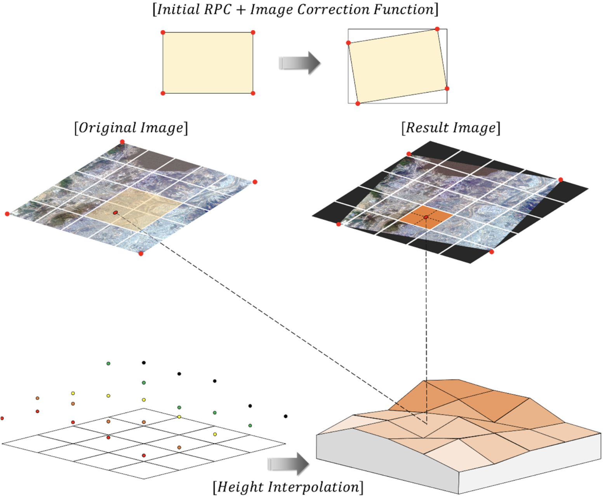

Linear Algebra & Applications
2201NSC
Affine Transformations
What are affine transformations?
An affine transformation maps points, straight lines and planes while preserving parallelism — parallel lines stay parallel.
Widely used in geometry, computer graphics and vision to map coordinates while keeping geometric relations.
Unlike linear transformations, affine transforms can also translate (shift) the space.

Affine transformations
This generalisation makes affine transformations particularly useful for:
- Representing more general geometric deformations
- Modelling transformations where position changes matter
Applications

Geometry correction
for
satellite images by S. Ban & T. Kim (2024).
Source: doi.org/10.3390/rs16162890

Visualizing the hidden 3D geometry behind LLMs by Sifal Klioui (2026).
Source: sifal.social/posts/Why-Modern-LLMs-Dropped-Mean-Centering-(And-Got-Away-With-It)

Visualizing the hidden 3D geometry behind LLMs by Sifal Klioui (2026).
Source: sifal.social/posts/Why-Modern-LLMs-Dropped-Mean-Centering-(And-Got-Away-With-It)
Affine Transformations
Consider a point $\mathbf x=(x,y).$ A transformation $T: \mathbb R^2 \to \mathbb R^2$ of the form
\( T\left( \mathbf x\right) = \begin{pmatrix} ax + by + e \\ cx + dy + f \end{pmatrix} \)
where $a,b,c,d,e$ and $f$ are real numbers, is called a two-dimensional affine transformation.
Affine Transformations
|
\( T\left( \mathbf x\right) = \begin{pmatrix} ax + by + e \\ cx + dy + f \end{pmatrix} \) For example, if $a,d = 1,$ and $b,c=0,$ then we have a pure translation \[ T\left( \mathbf x\right) = \begin{pmatrix} x + e \\ y + f \end{pmatrix} \] |
Affine Transformations
|
\( T\left( \mathbf x\right) = \begin{pmatrix} ax + by + e \\ cx + dy + f \end{pmatrix} \) If $b,c=0$ and $e,f=0;$ then we have a pure scale \[ T\left( \mathbf x\right) = \begin{pmatrix} ax \\ dy \end{pmatrix} \] |
Affine Transformations
|
\( T\left( \mathbf x\right) = \begin{pmatrix} ax + by + e \\ cx + dy + f \end{pmatrix} \) If $a,d = \cos \theta,$ $b = -\sin \theta,$ $c = \sin \theta,$ and $e,f=0,$ then we have a pure rotation about the origin \[ \small T\left( \mathbf x\right) = \begin{pmatrix} x\cos\theta -y \sin \theta \\ x\sin \theta + y \cos \theta \end{pmatrix} \] |
Affine Transformations
|
\( \mathbf{T\left( \mathbf x\right)} = \begin{pmatrix} ax + by + e \\ cx + dy + f \end{pmatrix} \) Finally, if $a,d=1,$ and $e,f=0;$ we have the shear transforms \[ T\left( \mathbf x\right) = \begin{pmatrix} x+ by \\ y+ cx \end{pmatrix} \] |
Matrix representation of affine transformations
We know a linear transformation can be written in matrix form
\(T(\mathbf{x}) = \begin{pmatrix} ax + by \\ cx + dy \end{pmatrix} \) \( = \begin{pmatrix} a & b \\ c & d \end{pmatrix} \begin{pmatrix} x \\ y \end{pmatrix}, \)
Can we do the same with affine transformations?
No, the problem is the translation❗️

Homogeneous coordinates
To enable affine transformations, such as translation, to be represented using matrix multiplication, we embed these 2D vectors into 3D space using homogeneous coordinates by appending a third coordinate, conventionally set to 1:
\( \begin{pmatrix} x \\ y \end{pmatrix} \) \( \quad \Rightarrow \quad \begin{pmatrix} x \\ y \\ 1 \end{pmatrix}. \)
This third coordinate is typically called \(w\) to distinguish it from the usual \(z\)-coordinate in 3D geometry.
Homogeneous coordinates
Therefore, affine transformations can be written as
Homogeneous coordinates
Affine transformations applied to a square
For example, suppose we have $2\times 2$ square centred at the origin. First, we want to rotate the square by $45^{\circ}$ about its centre; and then move it so its centre is at $(2, 3).$

Affine transformations applied to a square
For example, suppose we have $2\times 2$ square centred at the origin. First, we want to rotate the square by $45^{\circ}$ about its centre; and then move it so its centre is at $(2, 3).$
In matrix form we have
${\large M}=$ $ \color{blue}{ \overbrace{\begin{pmatrix} 1 & 0 & 2 \\ 0 & 1 & 3 \\ 0 & 0 & 1 \end{pmatrix}}^{\text{Translate at } (2,3)} }$ $ \color{red}{\overbrace{\begin{pmatrix} \cos 45^{\circ} & -\sin 45^{\circ}& 0 \\ \sin 45^{\circ} & \cos 45^{\circ} & 0 \\ 0 & 0 & 1 \end{pmatrix}}^{\text{Rotate} 45^\circ}} \qquad\qquad\quad\;$
$= \begin{pmatrix} \cos 45^{\circ} & -\sin 45^{\circ}& 3 \\ \sin 45^{\circ} & \cos 45^{\circ} & 2 \\ 0 & 0 & 1 \end{pmatrix}$ $= \begin{pmatrix} \sqrt{2}/2 & -\sqrt{2}/2 & 3 \\ \sqrt{2}/2 & \sqrt{2}/2 & 2 \\ 0 & 0 & 1 \end{pmatrix}$
Affine transformations applied to a square
For example, suppose we have $2\times 2$ square centred at the origin. First, we want to rotate the square by $45^{\circ}$ about its centre; and then move it so its centre is at $(2, 3).$
Now consider the vertices of the square using homogeneous coordinates
\( v_1 = \begin{pmatrix} 1 \\ 1 \\ 1 \end{pmatrix}, \;\; v_2 = \begin{pmatrix} -1 \\ 1 \\ 1 \end{pmatrix}, \;\; v_3 = \begin{pmatrix} 1 \\ -1 \\ 1 \end{pmatrix},\;\; v_4 = \begin{pmatrix} -1 \\ -1 \\ 1 \end{pmatrix}. \)
Multiplying by the matrix $M$ we obtain the new vertices:
\( v_1' = M \begin{pmatrix} 1 \\ 1 \\ 1 \end{pmatrix} = \begin{pmatrix} 3 \\ 2+\sqrt{2} \\ 1 \end{pmatrix},\quad v_2' = M \begin{pmatrix} -1 \\ 1 \\ 1 \end{pmatrix} = \begin{pmatrix} 3-\sqrt{2} \\ 2\\ 1 \end{pmatrix}, \)
\( v_3' = M \begin{pmatrix} 1 \\ -1 \\ 1 \end{pmatrix} = \begin{pmatrix} 3 + \sqrt{2} \\ 2 \\ 1 \end{pmatrix}, \quad v_4' = M \begin{pmatrix} -1 \\ -1 \\ 1 \end{pmatrix} = \begin{pmatrix} 3 \\ 2-\sqrt{2} \\ 1 \end{pmatrix}. \)
Affine transformations
Homogeneous coordinates
Rotations in 3D

Affine transformations & Fractals
An IFS consists of a finite set of affine transformations \( \{T_1, T_2, \dots, T_n\},\) each of the form:
\( T_i(\mathbf{x}) = A_i \mathbf{x} + \mathbf{t}_i, \)
where \( A_i \) is a \(2 \times 2\) matrix representing a linear transformation (scaling, rotation, or shearing), and \( \mathbf{t}_i \) is a translation vector.
Affine transformations & Fractals
An IFS consists of a finite set of affine transformations \( \{T_1, T_2, \dots, T_n\},\) each of the form:
\( T_i(\mathbf{x}) = A_i \mathbf{x} + \mathbf{t}_i, \)
There are two common approaches for plotting fractals using IFS:
- Deterministic Algorithm: Apply all transformations to a set of points in each iteration.
- Random (or Probabilistic) Algorithm: At each step, apply one randomly chosen transformation according to a probability distribution.
Deterministic IFS
We apply the following affine transformations at each iteration:
\( \begin{aligned} T_1(\mathbf x) &= \begin{pmatrix} 0.5 & 0 & 0\\ 0 & 0.5 & 0 \\ 0 & 0 & 1 \end{pmatrix} \begin{pmatrix} x \\ y \\ 1 \end{pmatrix}, \\[1ex] T_2(\mathbf{x}) &= \begin{pmatrix} 0.5 & 0 & 0 \\ 0 & 0.5 & 100 \\ 0 & 0 & 1\end{pmatrix} \begin{pmatrix} x \\ y \\ 1 \end{pmatrix}, \\[1ex] T_3(\mathbf{x}) &= \begin{pmatrix} 0.5 & 0 & 100 \\ 0 & 0.5 & 100 \\ 0 & 0 & 1\end{pmatrix} \begin{pmatrix} x \\ y \\ 1 \end{pmatrix}. \end{aligned} \)
💻 Pseudocode →Deterministic IFS: \( \begin{aligned} T_1(\mathbf x) &= \begin{pmatrix} 0.5 & 0 & 0\\ 0 & 0.5 & 0 \\ 0 & 0 & 1 \end{pmatrix} \begin{pmatrix} x \\ y \\ 1 \end{pmatrix}, \end{aligned} \) \( \begin{aligned} T_2(\mathbf{x}) &= \begin{pmatrix} 0.5 & 0 & 0 \\ 0 & 0.5 & 100 \\ 0 & 0 & 1\end{pmatrix} \begin{pmatrix} x \\ y \\ 1 \end{pmatrix}, \end{aligned} \) \( \begin{aligned} T_3(\mathbf{x}) &= \begin{pmatrix} 0.5 & 0 & 100 \\ 0 & 0.5 & 100 \\ 0 & 0 & 1\end{pmatrix} \begin{pmatrix} x \\ y \\ 1 \end{pmatrix}. \end{aligned} \) |
|
Deterministic IFS: JavaScript
Probabilistic IFS
We apply the following affine transformations, with a given probability for each case:
|
$ \begin{aligned} T_1(\mathbf{x}) &= \begin{pmatrix} 0 & 0 & 0 \\ 0 & 0.16 & 0 \\ 0 & 0 & 1 \end{pmatrix} \begin{pmatrix} x \\ y \\ 1 \end{pmatrix}, \\[1ex] T_2(\mathbf{x}) &= \begin{pmatrix} 0.85 & 0.04 & 0 \\ -0.04 & 0.85 & 1.6 \\ 0 & 0 & 1 \end{pmatrix} \begin{pmatrix} x \\ y \\ 1 \end{pmatrix}, \\[1ex] T_3(\mathbf{x}) &= \begin{pmatrix} 0.2 & -0.26 & 0 \\ 0.23 & 0.22 & 1.6 \\ 0 & 0 & 1 \end{pmatrix} \begin{pmatrix} x \\ y \\ 1 \end{pmatrix}, \\[1ex] T_4(\mathbf{x}) &= \begin{pmatrix} -0.15 & 0.28 & 0 \\ 0.26 & 0.24 & 0.44 \\ 0 & 0 & 1 \end{pmatrix} \begin{pmatrix} x \\ y \\ 1 \end{pmatrix}. \end{aligned} $ |
|
Probabilistic IFS
IFS values for a fern
| T | a | b | c | d | e | f | p |
|---|---|---|---|---|---|---|---|
| 1 | 0 | 0 | 0 | 0.16 | 0 | 0 | 0.01 |
| 2 | 0.85 | 0.04 | -0.04 | 0.85 | 0 | 1.6 | 0.85 |
| 3 | 0.2 | -0.26 | 0.23 | 0.22 | 0 | 1.6 | 0.07 |
| 4 | -0.15 | 0.28 | 0.26 | 0.24 | 0 | 0.44 | 0.07 |
|
Probabilistic IFS: $ \begin{aligned} T_1(\mathbf{x}) &= \begin{pmatrix} 0 & 0 & 0 \\ 0 & 0.16 & 0 \\ 0 & 0 & 1 \end{pmatrix} \begin{pmatrix} x \\ y \\ 1 \end{pmatrix} \end{aligned} \mapsto 0.01 $ $ \begin{aligned} T_2(\mathbf{x}) &= \begin{pmatrix} 0.85 & 0.04 & 0 \\ -0.04 & 0.85 & 1.6 \\ 0 & 0 & 1 \end{pmatrix} \begin{pmatrix} x \\ y \\ 1 \end{pmatrix} \end{aligned} \mapsto 0.85 $ $ \begin{aligned} T_3(\mathbf{x}) &= \begin{pmatrix} 0.2 & -0.26 & 0 \\ 0.23 & 0.22 & 1.6 \\ 0 & 0 & 1 \end{pmatrix} \begin{pmatrix} x \\ y \\ 1 \end{pmatrix} \end{aligned} \mapsto 0.07 $ $ \begin{aligned} T_4(\mathbf{x}) &= \begin{pmatrix} -0.15 & 0.28 & 0 \\ 0.26 & 0.24 & 0.44 \\ 0 & 0 & 1 \end{pmatrix} \begin{pmatrix} x \\ y \\ 1 \end{pmatrix} \end{aligned} \mapsto 0.07 $ |
💻 Pseudocode ↓
|